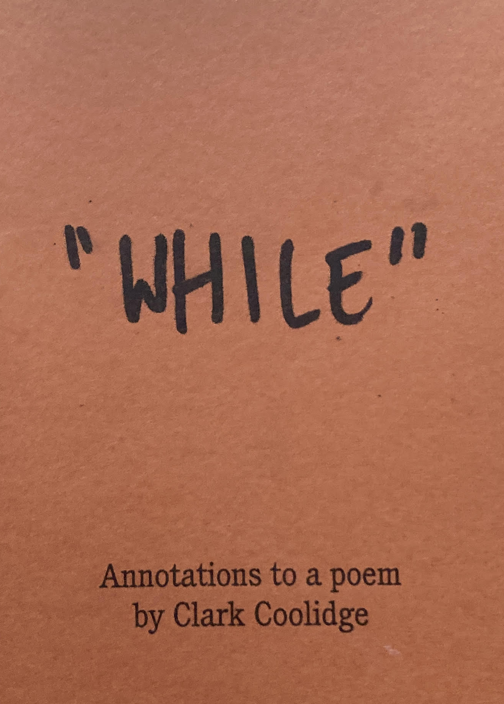

July 27, 2021
In September (hopefully) I'll be putting out the first in the Annotations series. Annotations is a print project with diction as its connective tissue. For the first issue, twelve poets contributed work around the Clark Coolidge poem "While." It is my hope to continue the series throughout 2021-2022. I'll be updating this space with pictures and PDFs as I have them.

If you are interested in receiving the prompt for Issue 2, please let me know at ss3789990@gmail.com.